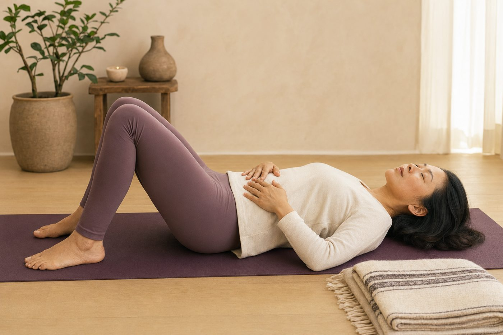

練習時總是憋氣？怎麼開始感受腹式呼吸？

回完一串訊息，手才離開鍵盤，你就不自覺吐了一大口氣。等到瑜伽課上想補做一個深呼吸，肩膀反而先抬了起來。
腹式呼吸入門可以從有支撐的坐姿或躺姿開始，感受下肋與腹部隨吸吐自然起伏。橫膈膜參與吸氣，肩膀不必為了吸得更深而刻意抬高。先觀察幾個舒服的呼吸，無須刻意鼓肚、吸滿或屏息。若有持續或新出現的呼吸不適，應由醫療專業人員評估。
怎麼開始感受下肋與腹部的起伏？
找一個方便換姿勢的位置。可以靠穩椅背，也可以躺下並用枕頭支撐。手輕放在下肋或腹部，感受自然吸吐時手底下有沒有一點變化。上胸也可能跟著動，不用把它壓住。做幾次覺得費力時，可以停下休息。
👆 手機版可左右滑動
| 入門姿勢 | 可以感受什麼 | 容易費力時怎麼調整 |
|---|---|---|
| 坐姿靠椅背 | 手底下的下肋或腹部是否隨呼吸變化。 | 手臂放回支點，吸吐都回到平常幅度。 |
| 舒適躺姿 | 背部有支撐時，肩膀是否還想一直往上抬。 | 換枕頭或坐回椅面，不必堅持躺著。 |
| 專注工作後 | 什麼時刻會屏氣，放下手上工作後是否不同。 | 先換姿勢，再觀察下一口自然呼吸。 |
回到電腦或課堂上，怎麼延續這個感覺？
若回到電腦前又聳肩或不自覺屏氣，可以先放開滑鼠、換一個坐法，再看工位上能做的短休息。想把這份感覺帶進動作，可接著讀上課吸氣或吐氣怎麼配。若平靜時仍覺得喘或呼吸不適，先停止練習並尋求適當評估。
常見問題
腹式呼吸一定要把肚子鼓很大嗎？
可以只觀察下肋與腹部自然起伏，不需要追求幅度。
呼吸時上胸也在動算做錯嗎？
上胸、下肋和腹部都可能有動作。先留意用力感和舒適度。
先記下最有感的日常時刻
可先記下哪個工作或練習情境最常讓你不自覺屏氣。
約 2 分鐘，免登入、免加 LINE。做完可用 3 天觀察卡整理日常感受。
開始免費 2 分鐘體態訊號掃描 →延伸閱讀 接著看如何把呼吸帶進瑜伽動作